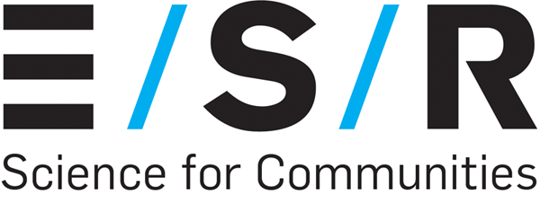

class: center, middle, inverse, title-slide # .huge[Genomics and Data Science at ESR] ## …something a little different… ### <div class="line-block"><a href="http://sirselim.github.io/">Dr Miles Benton</a><br /> Senior Scientist Bioinformatics<br /> Human Genomics, Institute of Environmental Science and Research (ESR)<br /> <br /> .large[Victoria University of Wellington, Wellington, 17<small><sup>th</sup></small> October 2019]<br /> <br /> <br /> .center[]</div> --- class: middle # .center[Advocate for reproducible research...] ## .center[Where possible my presentations and code are available online] <br /> <p> .center[ <img src="images/github_logo.png" style="width: 520px; margin-right: 1%; margin-top: 1.5em;"/> <img src="images/sirselim_qrcode.png" style="width: 202px; margin-right: 1%; margin-top: 1.5em;"/> ] </p> <br /> .center[[sirselim.github.io/presentations](http://sirselim.github.io/presentations)] --- class: middle inverse # QUT (February 2014 - June 2018) ## Brisbane (QLD), Australia ### <span style="color:#3498DB">PostDoc Research Fellow</span> <p> .center[ <img src="images/qut_ihbi.jpg" style="width: 330px; margin-right: 1%; margin-top: 1.5em; border: 3px solid white;"/> <img src="images/qut_gardens.jpg" style="width: 330px; margin-right: 1%; margin-top: 1.5em; border: 3px solid white;"/> ] </p> --- class: middle # Diagnostics Lab .large[Gene panel and Exome Sequencing (NATA accredited - neurological disorders)] <br> ## Sanger -> Gene panel -> Exome * move to WES -> increase in variants * manual approach through 30-60K rows of data in Excel * increased time to identify and validate variant(s) --- class: middle inverse # VCF-DART - what it's not... It is **NOT** a variant calling and quality control pipeline ... it's about data --- # Overview <p> .center[<img src="images/Pipeline_flowchart_v2.png" style="width: 95%; margin-right: 1%; margin-top: -0.5em; border: 3px solid white;"/>] </p> --- # Variant tiers <p> .center[<img src="images/tiers.png" style="width: 70%; margin-right: 1%; margin-top: -0.5em; border: 3px solid white;"/>] </p> --- class: middle inverse # "Module 1" - VCF-DART .large[(<span style="color:#3498DB">**V**</span>ariant <span style="color:#3498DB">**C**</span>all <span style="color:#3498DB">**F**</span>ormat - <span style="color:#3498DB">**D**</span>iagnostic <span style="color:#3498DB">**a**</span>nd <span style="color:#3498DB">**R**</span>eporting <span style="color:#3498DB">**T**</span>ool)] --- layout: false background-image: url("images/vcfdart_1.png") background-size: contain --- layout: false background-image: url("images/vcfdart_2.png") background-size: contain --- class: middle # Run-time .huge[30-50K variants (avg Proton exome VCF):] - 6-10 mins (24 core 256GB RAM) - 17-23 mins (4 core 12GB RAM) --- class: middle inverse # "Module 2" - VCF-DART Viewer --- class: middle center .huge[[...live demonstration...](https://130.216.216.85/sample-apps/WES_ShinyDiscover/)] <br> .huge[**?**] --- layout: false background-image: url("images/backup_1.png") background-size: contain --- layout: false background-image: url("images/backup_2.png") background-size: contain --- layout: false background-image: url("images/backup_3.png") background-size: contain --- layout: false background-image: url("images/backup_4.png") background-size: contain --- layout: false background-image: url("images/backup_5.png") background-size: contain --- layout: false background-image: url("images/backup_6.png") background-size: contain --- class: <p> .center[<img src="images/nectarcloud.png" style="width: 70%; margin-right: 1%; margin-top: -0.5em; border: 3px solid white;"/>] </p> Spun up VM to give reviewers a chance to ~~break~~ test things. * using 6 public exomes (1000G) <br> -- .large[**Allocated VM:**] * Ubuntu 18.08 * 4 cores * 12GB RAM * 30GB root * 120GB ephemeral disk -- <br> ...so it can scale down to quite reasonable specs... --- class: middle ## VCF-DART in the lab * much quicker time to variant shortlist and curation * can get to validation sooner (if required) * meaning report delivered faster ## Summary * open source * modular (tools and databases) * scalable (laptops -> servers) * easy to deploy and use [soon to become easier] * versioning --- class: middle inverse ## Current state of play * exciting times! * cancer genomics - Auckland University (Prof Cristin Print), Genomics Aotearoa * merging 'pipelines' to offer a flexible, unified and freely distributed system across NZ * working with Wellington DHB (Regional Genetics Lab) <p> .center[ <img src="images/UoA.png" style="width: 272px; margin-right: 1%; margin-top: 1.5em; border: #FFFFFF 3.5px outset;"/> <img src="images/GA-Wide-Colour-1200px.jpg" style="width: 315px; margin-right: 1%; margin-top: 1.5em; border: #FFFFFF 3.5px outset;"/> ] </p> --- class: middle ## Availability / Deployment <br> .large[Working on a wide range of deployment options:] <br> <p> .center[ <img src="images/github.jpg" style="width: 200px; margin-right: 2%;"/> <img src="images/aws.png" style="width: 215px; margin-right: 2%;"/> <img src="images/singularity-logo.svg" style="width: 135px; margin-right: 2%; margin-left: 2%;"/> <img src="images/NESI-logo.jpg" style="width: 300px; margin-right: 2%;"/> ] </p> --- class: middle inverse # to-do * ✔ ~~submit~~ manuscript - ~~accepted~~ published (The Journal of Molecular Diagnostics) * ✔ [release to the wild - GitHub (anyone interested can help out)](https://github.com/sirselim/WES_ShinyDiscover) * finish implementing ClinGen & ClinVar links * option for GnomAD-beta * re-factoring main code base (snakemake) * complete docker/singularity version * continue developing documentation! * work with clinicians to further develop and refine --- class: top # acknowledgements <div id="images"> <a href="http://xyz.com/hello"> <img src="images/robert.jpg" width="180px" height="250px"> <div class="caption"><span style="color:#3498DB">Dr Robert Smith (QUT)</span></div> </a> <a href="http://xyz.com/hi"> <img src="images/donia.jpg" width="180px" height="250px"> <div class="caption"><span style="color:#3498DB">Dr Donia Macartney-Coxson (ESR)</span></div> </a> </div> .pull-left[.medium[ Prof Lyn Griffiths Craig Windell (QUT) QUT lab group ]] .pull-right[.medium[ Prof Cristin Print (UoA) Dr Ben Curran (UoA) Wellington Regional Genetics Lab QRISCloud / Nectar ]] --- class: middle inverse # Guinea pig genomes... --- class: middle <p> .center[ <img src="images/GuineaPig.jpg" style="width: 720px; margin-right: 1%; margin-top: 1.5em;"/> ] </p> ## "We deserve a decent reference after everything we've been through!" --- class: middle <p> .center[ <img src="images/promethion.jpg" style="width: 420px; margin-right: 1%; margin-top: 1.5em; border: 3px solid white;"/> <img src="images/NovaSeq6000.jpg" style="width: 320px; margin-right: 1%; margin-top: 1.5em; border: 3px solid white;"/> ] </p> --- class: top inverse <br> <span style="color:#3498DB">**Long read sequencing**</span> * 3 out-bred females <br> -- <span style="color:#3498DB">**Short read sequencing**</span> * 6 animals * 3 females (same animals as above) * 3 males (a brother of each female) <br> -- ... what about the Y chr? ... -- * FISH for Y * sequence on our in-house minION * student project --- class: false background-image: url("images/titan.jpg") background-size: cover --- class: top <br> # Facilitating collaboration * using reproducible research ethos * creating interactive documents and applications * empowers data owners to explore their own data -- ## example RRBS guinea pig liver * pre-term (n=12) vs term (n=12) * shiny app to explore data * differential meth * PCA * interactive results tables -- .center[ Make available via our [internal server](http://leviathan/human_genomics/). ] --- class: top inverse # acknowledgements <div id="images"> <a href="http://xyz.com/hello"> <img src="images/max.jpg" style="width: 180px; height: 250px; margin-right: 1%; margin-top: 1.5em; border: 3px solid white;"/> <div class="caption"><span style="color:#3498DB">Dr Max Berry (University of Otago)</span></div> </a> <a href="http://xyz.com/hi"> <img src="images/donia.jpg" style="width: 180px; height: 250px; margin-right: 1%; margin-top: 1.5em; border: 3px solid white;"/> <div class="caption"><span style="color:#3498DB">Dr Donia Macartney-Coxson (ESR)</span></div> </a> </div> .pull-left[.medium[ Dr Rebecca Dyson (University of Otago) ]] .pull-right[.medium[ Jane Clapham (ESR) Dr Joep de Ligt (ESR) Dr David Eccles (Malaghan Institute) ]] --- class: middle inverse # Data science at ESR... --- class: middle # Data Carpentry https://datacarpentry.org/ > **What is Data Carpentry?** > Data Carpentry develops and teaches workshops on the fundamental data skills needed to conduct research. Our mission is to provide researchers high-quality, domain-specific training covering the full lifecycle of data-driven research. --- class: top inverse <p> .center[ <img src="images/DC_ESR_1.jpg" style="width: 420px; margin-right: 1%; margin-top: 1.5em; border: 3px solid white;"/> <img src="images/DC_ESR_2.jpg" style="width: 420px; margin-right: 1%; margin-top: 1.5em; border: 3px solid white;"/> ] </p> * member for ~10 months * trained 8 instructors * more than 140 staff (<span style="color:#3498DB">~35%</span>) have gone through training --- class: middle # Data Accelerator --- class: top inverse <br> <br> .large[<span style="color:#3498DB">Applicants pitch small projects:</span>] .large[ * 15 week course ] -- .large[ * 1 day per week ] -- .large[ * 1 on 1 with mentor ] -- .large[ * graduation at the end ] -- <br> .center[.large[ "...going from zero R to interactive dashboards..." ]] --- class: middle # E.R.I.C.A .large[ (<span style="color:#3498DB">**E**</span>ngineering, <span style="color:#3498DB">**R**</span>obotics, <span style="color:#3498DB">**I**</span>nnovation, <span style="color:#3498DB">**C**</span>oding and <span style="color:#3498DB">**A**</span>utomation) ] <br> <p> .center[ <img src="images/lego.jpg" style="width: 200px; margin-right: 1%; margin-top: 1.5em;"/> <img src="images/nvidia_tegra.jpg" style="width: 310px; margin-right: 1%; margin-top:"/> <img src="images/rbpi.png" style="width: 200px; margin-right: 1%; margin-top: 1.5em;"/> <img src="images/arduino.jpg" style="width: 200px; margin-right: 1%; margin-top: 1.5em;"/> ] </p> --- class: top inverse <p> .center[ <img src="images/ESR_print_1.jpg" style="width: 300px; margin-right: 1%; margin-top: 1.5em; border: 3px solid white;"/> <img src="images/ESR_print_2.jpg" style="width: 300px; margin-right: 1%; margin-top: 1.5em; border: 3px solid white;"/> ] </p> <p> .center[ <img src="images/ESR_nano_1.jpg" style="width: 193px; margin-right: 1%; margin-top: 1.5em; border: 3px solid white;"/> <img src="images/ESR_nano_3.jpg" style="width: 193px; margin-right: 1%; margin-top: 1.5em; border: 3px solid white;"/> <img src="images/ESR_nano_2.jpg" style="width: 193px; margin-right: 1%; margin-top: 1.5em; border: 3px solid white;"/> ] </p> --- class: top <br> .large[ <span style="color:#3498DB">**E.R.I.C.A is geared towards getting people thinking**</span> * aim is to generate new projects/innovations * automation of jobs * **example:** RPi with mounted camera taking time-lapse ] <br> -- .large[ <span style="color:#3498DB">**Remote sensors**</span> * deploy in the field * **example:** monitoring in field-green houses * models to compare analog and digital temp readings for calibration ] --- class: middle <p> .center[ <img src="images/remote_sensors.jpg" style="width: 715px; border: 3px solid white;"/> ] </p> --- class: top # acknowledgements <div id="images"> <a href="http://xyz.com/hello"> <img src="images/RDean.jpg" width="350px"> <div class="caption"><span style="color:#3498DB">Richard Dean (ESR)</span></div> </a> </div> .pull-left[.medium[ Dr Joep de Ligt (ESR) Dr Christina Straub (ESR) Ben Waite (ESR) ]] .pull-right[.medium[ Dr Pierre Dupont (ESR) Janet Stacy (ESR) tweettweettweettweet Kim Ngugen (ESR) ]] --- class: middle ## Want to come and work in Human Genomics & bioinformatics with us? ### We're hiring!! [(Seek link)](https://t.co/xnR451S40o) .pull-left[ <blockquote class="twitter-tweet"><p lang="en" dir="ltr">Kia ora <a href="https://twitter.com/hashtag/ASHG2019?src=hash&ref_src=twsrc%5Etfw">#ASHG2019</a>, and <a href="https://twitter.com/hashtag/NZ?src=hash&ref_src=twsrc%5Etfw">#NZ</a> bioinformaticians. Want to be part of both genomics research and translating it to the clinic? Care about maximising its potential in partnership with <a href="https://twitter.com/hashtag/M%C4%81ori?src=hash&ref_src=twsrc%5Etfw">#Māori</a> and <a href="https://twitter.com/hashtag/Pacific?src=hash&ref_src=twsrc%5Etfw">#Pacific</a> communities? Join the team <a href="https://twitter.com/ESRNewZealand?ref_src=twsrc%5Etfw">@ESRNewZealand</a>, apply at <a href="https://t.co/xnR451S40o">https://t.co/xnR451S40o</a></p>— Joep de Ligt (@Joepdl) <a href="https://twitter.com/Joepdl/status/1184389982577758208?ref_src=twsrc%5Etfw">October 16, 2019</a></blockquote> <script async src="https://platform.twitter.com/widgets.js" charset="utf-8"></script> ] .pull-left[ <p> .center[ <img src="images/ESR_SFC_logo.png" style="width: 380px; margin-right: 1%; margin-top: 5.5em; border: 3px solid white;"/> ] </p> ] --- class: middle inverse <p> .huge[.center[<b>Thank you!</b>]] <br> </p>